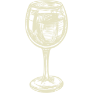

Лучший вкус, это вкус долголетнего вина
Существует довольно широко распространённое и тем не менее ошибочное мнение, будто чем старее вино, тем оно лучше. Однако далеко не всегда и не во всех случаях самое старое вино есть самое лучшее. Вино «живёт», в нём происходят очень сложные биохимические процессы, оно меняется – формируется, созревает, стареет и распадается – деформируется и «деградирует» от времени, причём у разных сортовых групп вина для каждой стадии имеются свои сроки.
